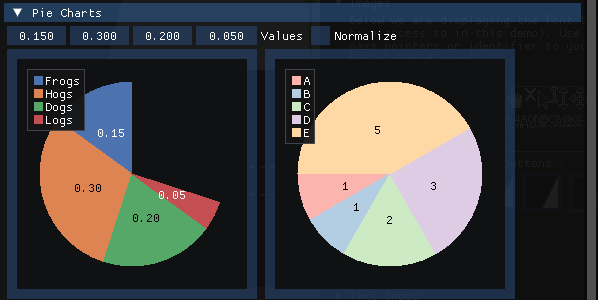

ImPlot

This extension also allow you to use the ImPlot library, this is an immediate mode, GPU accelerated plotting library for ImGUI, this project and source code is available on github at: https://github.com/epezent/implot.
Note
The C# wrapper is generated on top of a c-api wrapper version of this library, so some samples may not work directly but all the features are supported.
Features
The list of supported plot are:
Line Plots
A line plot or chart plot is a type of chart which displays information as a series of data points called 'markers' connected by straight line segments. It is a basic type of chart common in many fields. It is similar to a scatter plot except that the measurement points are ordered (typically by their x-axis value) and joined with straight line segments. A line plot is often used to visualize a trend in data over intervals of time.

Filled Line Plots
A Filled Line Plot or area chart displays graphically quantitative data. It is based on the line chart. The area between axis and line are commonly emphasized with colors. Commonly one compares two or more quantities with an area chart.

Shaded Plots
A Shaded Plot is a type of chart which display graphically the difference between to series based on lines. The area between two lines of the same graph is colored to highlight when they are further apart.

Scatter Plots
A scatter plot is a type of plot or mathematical diagram using Cartesian coordinates to display values for typically two variables for a set of data. If the points are coded (color/shape/size), one additional variable can be displayed. The data are displayed as a collection of points, each having the value of one variable determining the position on the horizontal axis and the value of the other variable determining the position on the vertical axis.

Realtime Plots
A Realtime Plot or Realtime chart is a type of chart which display information as a series with data capture in realtime. It is chart common to display fps (Frames per seconds) or other type of measurements in a graphic application.

Stairstep Plots
A Stairstep plot is a type of chart which represent digital signals that advancing discreetly by jumps or steps in an stairs.

Bar Plots
A bar plot or bar chart is a chart or graph that presents categorical data with rectangular bars with heights or lengths proportional to the values that they represent. The bars can be plotted vertically or horizontally.

Bar Groups
A bar groups or clustered chart is similar to a bar chart but in this case the bars in the same category are drawn together.

Bar Stacks
A bar stack is based on bar plot but in this case it stacks bars on top of each other so that the height of the resulting stack shows the combined result. Stacked bar charts are not suited to data sets having both positive and negative values.

Error Bars
A Error bar chart is a type of chart used to visualize series of data and the distance to errors in those data.

Stem Plots
A Stem plot is a type of chart used to compare two or more stem series in the same chart. It is using vertical lines to highlight the area between the stem series.

Infinite Lines
A Infinite line chart is used to show a grid and the values are represented by horizontal lines as a constant values.

Pie Charts
A pie chart (or a circle chart) is a circular statistical graphic, which is divided into slices to illustrate numerical proportion. In a pie chart, the arc length of each slice (and consequently its central angle and area) is proportional to the quantity it represents. While it is named for its resemblance to a pie which has been sliced, there are variations on the way it can be presented.

Heatmaps
A heat map (or heatmap) is a data visualization technique that shows magnitude of a phenomenon as color in two dimensions. The variation in color may be by intensity, giving obvious visual cues to the reader about how the phenomenon is clustered or varies over space.

Histogram
A histogram is an approximate representation of the distribution of numerical data. To construct a histogram, the first step is the range of values that divide the entire range of values into a series of intervals and then count how many values fall into each interval.

Histogram 2D
A Histogram 2D chart is similar to the histogram chart but in this case information from a legend is also displayed that allow you understand the colors displays.

Digital Plots
A Digital Plot is a type of chart which display digital or analog signal over time. This is useful to show electronic signal inside an application.